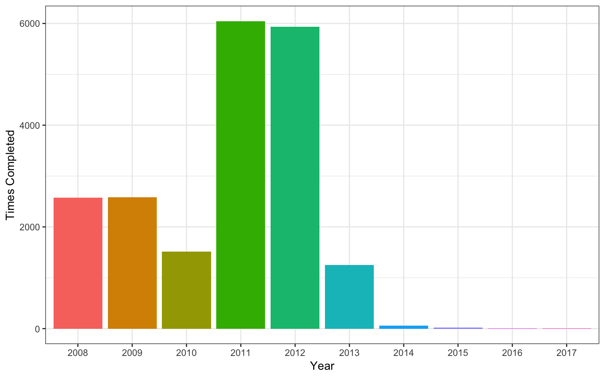

Chapter 6 Data Relations
6.1 Learning Objectives
- Be able to use the 4 mutating join verbs:
- Be able to use the 2 filtering join verbs:
- Be able to use the 2 binding join verbs:
- Be able to use the 3 set operations:
6.2 Resources
6.3 Setup
# libraries needed for these examples
library(tidyverse)6.3.1 Data
First, we'll create two small data tables.
subject has id, sex and age for subjects 1-5. Age and sex are missing for subject 3.
subject <- tibble(
id = seq(1,5),
sex = c("m", "m", NA, "f", "f"),
age = c(19, 22, NA, 19, 18)
)| id | sex | age |
|---|---|---|
| 1 | m | 19 |
| 2 | m | 22 |
| 3 | NA | NA |
| 4 | f | 19 |
| 5 | f | 18 |
exp has subject id and the score from an experiment. Some subjects are missing, some completed twice, and some are not in the subject table.
exp <- tibble(
id = c(2, 3, 4, 4, 5, 5, 6, 6, 7),
score = c(10, 18, 21, 23, 9, 11, 11, 12, 3)
)| id | score |
|---|---|
| 2 | 10 |
| 3 | 18 |
| 4 | 21 |
| 4 | 23 |
| 5 | 9 |
| 5 | 11 |
| 6 | 11 |
| 6 | 12 |
| 7 | 3 |
6.4 Mutating Joins
All the mutating joins have this basic syntax:
****_join(x, y, by = NULL, suffix = c(".x", ".y")
x= the first (left) tabley= the second (right) tableby= what columns to match on. If you leave this blank, it will match on all columns with the same names in the two tables.suffix= if columns have the same name in the two tables, but you aren't joining by them, they get a suffix to make them unambiguous. This defaults to ".x" and ".y", but you can change it to something more meaningful.
6.4.1 left_join()
Figure 6.1: Left Join
A left_join keeps all the data from the first (left) table and joins anything that matches from the second (right) table. If the right table has more than one match for a row in the right table, there will be more than one row in the joined table (see ids 4 and 5).
left_join(subject, exp, by = "id")## # A tibble: 7 x 4
## id sex age score
## <dbl> <chr> <dbl> <dbl>
## 1 1 m 19 NA
## 2 2 m 22 10
## 3 3 <NA> NA 18
## 4 4 f 19 21
## 5 4 f 19 23
## 6 5 f 18 9
## 7 5 f 18 11You can leave out the by argument if you're matching on all of the columns with the same name, but it's good practice to always specify it so your code is robust to changes in the loaded data.

Figure 6.2: Left Join (reversed)
The order of tables is swapped here, so the result is all rows from the exp table joined to any matching rows from the subject table.
left_join(exp, subject, by = "id")## # A tibble: 9 x 4
## id score sex age
## <dbl> <dbl> <chr> <dbl>
## 1 2 10 m 22
## 2 3 18 <NA> NA
## 3 4 21 f 19
## 4 4 23 f 19
## 5 5 9 f 18
## 6 5 11 f 18
## 7 6 11 <NA> NA
## 8 6 12 <NA> NA
## 9 7 3 <NA> NA6.4.2 right_join()

Figure 6.3: Right Join
A right_join keeps all the data from the second (right) table and joins anything that matches from the first (left) table.
right_join(subject, exp, by = "id")## # A tibble: 9 x 4
## id sex age score
## <dbl> <chr> <dbl> <dbl>
## 1 2 m 22 10
## 2 3 <NA> NA 18
## 3 4 f 19 21
## 4 4 f 19 23
## 5 5 f 18 9
## 6 5 f 18 11
## 7 6 <NA> NA 11
## 8 6 <NA> NA 12
## 9 7 <NA> NA 3
This table has the same information as left_join(exp, subject, by = "id"), but the columns are in a different order (left table, then right table).
6.4.3 inner_join()

Figure 6.4: Inner Join
An inner_join returns all the rows that have a match in the other table.
inner_join(subject, exp, by = "id")## # A tibble: 6 x 4
## id sex age score
## <dbl> <chr> <dbl> <dbl>
## 1 2 m 22 10
## 2 3 <NA> NA 18
## 3 4 f 19 21
## 4 4 f 19 23
## 5 5 f 18 9
## 6 5 f 18 116.4.4 full_join()

Figure 6.5: Full Join
A full_join lets you join up rows in two tables while keeping all of the information from both tables. If a row doesn't have a match in the other table, the other table's column values are set to NA.
full_join(subject, exp, by = "id")## # A tibble: 10 x 4
## id sex age score
## <dbl> <chr> <dbl> <dbl>
## 1 1 m 19 NA
## 2 2 m 22 10
## 3 3 <NA> NA 18
## 4 4 f 19 21
## 5 4 f 19 23
## 6 5 f 18 9
## 7 5 f 18 11
## 8 6 <NA> NA 11
## 9 6 <NA> NA 12
## 10 7 <NA> NA 36.5 Filtering Joins
6.5.1 semi_join()

Figure 6.6: Semi Join
A semi_join returns all rows from the left table where there are matching values in the right table, keeping just columns from the left table.
semi_join(subject, exp, by = "id")## # A tibble: 4 x 3
## id sex age
## <int> <chr> <dbl>
## 1 2 m 22
## 2 3 <NA> NA
## 3 4 f 19
## 4 5 f 18Unlike an inner join, a semi join will never duplicate the rows in the left table if there is more than one maching row in the right table.

Figure 6.7: Semi Join (Reversed)
Order matters in a semi join.
semi_join(exp, subject, by = "id")## # A tibble: 6 x 2
## id score
## <dbl> <dbl>
## 1 2 10
## 2 3 18
## 3 4 21
## 4 4 23
## 5 5 9
## 6 5 116.5.2 anti_join()

Figure 6.8: Anti Join
A anti_join return all rows from the left table where there are not matching values in the right table, keeping just columns from the left table.
anti_join(subject, exp, by = "id")## # A tibble: 1 x 3
## id sex age
## <int> <chr> <dbl>
## 1 1 m 19
Figure 6.9: Anti Join (Reversed)
Order matters in an anti join.
anti_join(exp, subject, by = "id")## # A tibble: 3 x 2
## id score
## <dbl> <dbl>
## 1 6 11
## 2 6 12
## 3 7 36.6 Binding Joins
6.6.1 bind_rows()
You can combine the rows of two tables with bind_rows.
Here we'll add subject data for subjects 6-9 and bind that to the original subject table.
new_subjects <- tibble(
id = seq(6, 9),
sex = c("m", "m", "f", "f"),
age = c(19, 16, 20, 19)
)
bind_rows(subject, new_subjects)## # A tibble: 9 x 3
## id sex age
## <int> <chr> <dbl>
## 1 1 m 19
## 2 2 m 22
## 3 3 <NA> NA
## 4 4 f 19
## 5 5 f 18
## 6 6 m 19
## 7 7 m 16
## 8 8 f 20
## 9 9 f 19The columns just have to have the same names, they don't have to be in the same order. Any columns that differ between the two tables will just have NA values for entries from the other table.
If a row is duplicated between the two tables (like id 5 below), the row will also be duplicated in the resulting table. If your tables have the exact same columns, you can use union() (see below) to avoid duplicates.
new_subjects <- tibble(
id = seq(5, 9),
age = c(18, 19, 16, 20, 19),
sex = c("f", "m", "m", "f", "f"),
new = c(1,2,3,4,5)
)
bind_rows(subject, new_subjects)## # A tibble: 10 x 4
## id sex age new
## <int> <chr> <dbl> <dbl>
## 1 1 m 19 NA
## 2 2 m 22 NA
## 3 3 <NA> NA NA
## 4 4 f 19 NA
## 5 5 f 18 NA
## 6 5 f 18 1
## 7 6 m 19 2
## 8 7 m 16 3
## 9 8 f 20 4
## 10 9 f 19 56.6.2 bind_cols()
You can merge two tables with the same number of rows using bind_cols. This is only useful if the two tables have their rows in the exact same order. The only advantage over a left join is when the tables don't have any IDs to join by and you have to rely solely on their order.
new_info <- tibble(
colour = c("red", "orange", "yellow", "green", "blue")
)
bind_cols(subject, new_info)## # A tibble: 5 x 4
## id sex age colour
## <int> <chr> <dbl> <chr>
## 1 1 m 19 red
## 2 2 m 22 orange
## 3 3 <NA> NA yellow
## 4 4 f 19 green
## 5 5 f 18 blue6.7 Set Operations
6.7.1 intersect()
intersect() returns all rows in two tables that match exactly. The columns don't have to be in the same order.
new_subjects <- tibble(
id = seq(4, 9),
age = c(19, 18, 19, 16, 20, 19),
sex = c("f", "f", "m", "m", "f", "f")
)
dplyr::intersect(subject, new_subjects)## # A tibble: 2 x 3
## id sex age
## <int> <chr> <dbl>
## 1 4 f 19
## 2 5 f 186.7.2 union()
union() returns all the rows from both tables, removing duplicate rows.
dplyr::union(subject, new_subjects)## # A tibble: 9 x 3
## id sex age
## <int> <chr> <dbl>
## 1 9 f 19
## 2 8 f 20
## 3 7 m 16
## 4 6 m 19
## 5 5 f 18
## 6 4 f 19
## 7 3 <NA> NA
## 8 2 m 22
## 9 1 m 196.7.3 setdiff()
setdiff returns rows that are in the first table, but not in the second table.
setdiff(subject, new_subjects)## # A tibble: 3 x 3
## id age sex
## <int> <dbl> <chr>
## 1 1 19 m
## 2 2 22 m
## 3 3 NA <NA>Order matters for setdiff.
setdiff(new_subjects, subject)## # A tibble: 4 x 3
## id sex age
## <int> <chr> <dbl>
## 1 6 m 19
## 2 7 m 16
## 3 8 f 20
## 4 9 f 196.8 Exercises
Download the formative exercises. See the answers only after you've attempted all the questions.
6.8.1 Mutating joins
Load data from disgust_scores.csv, personality_scores.csv and users.csv. Each participant is identified by a unique user_id.
Add participant data to the disgust table.
disgust <- read_csv("data/disgust_scores.csv") ocean <- read_csv("data/personality_scores.csv") user <- read_csv("data/users.csv") study1 <- left_join(disgust, user, by = "user_id") head(study1)## # A tibble: 6 x 8 ## id user_id date moral pathogen sexual sex birthday ## <dbl> <dbl> <date> <dbl> <dbl> <dbl> <chr> <date> ## 1 1 1 2008-07-10 1.43 2.71 1.71 female 1976-11-18 ## 2 3 155324 2008-07-11 3 2.57 1.86 female 1984-09-30 ## 3 4 155366 2008-07-12 5.57 4 0.429 male 1982-04-09 ## 4 5 155370 2008-07-12 5.71 4.86 4.71 female 1968-04-04 ## 5 6 155386 2008-07-12 1.43 3.86 3.71 male 1983-04-22 ## 6 7 155409 2008-07-12 4.14 4.14 1.57 male 1983-03-31Intermediate: Calculate the age of each participant on the date they did the disgust questionnaire. Round to the nearest tenth of a year.
library(lubridate) study1_ages <- study1 %>% mutate( age = date - birthday, age_days = as.integer(age), age_years = round(age_days/365.25, 1) ) study1_ages %>% select(date, birthday:age_years) %>% head()## # A tibble: 6 x 5 ## date birthday age age_days age_years ## <date> <date> <time> <int> <dbl> ## 1 2008-07-10 1976-11-18 11557 days 11557 31.6 ## 2 2008-07-11 1984-09-30 8685 days 8685 23.8 ## 3 2008-07-12 1982-04-09 9591 days 9591 26.3 ## 4 2008-07-12 1968-04-04 14709 days 14709 40.3 ## 5 2008-07-12 1983-04-22 9213 days 9213 25.2 ## 6 2008-07-12 1983-03-31 9235 days 9235 25.3Add the participant data to the disgust data, but have the columns from the participant table first.
study2 <- right_join(user, disgust, by = "user_id") head(study2)## # A tibble: 6 x 8 ## user_id sex birthday id date moral pathogen sexual ## <dbl> <chr> <date> <dbl> <date> <dbl> <dbl> <dbl> ## 1 1 female 1976-11-18 1 2008-07-10 1.43 2.71 1.71 ## 2 155324 female 1984-09-30 3 2008-07-11 3 2.57 1.86 ## 3 155366 male 1982-04-09 4 2008-07-12 5.57 4 0.429 ## 4 155370 female 1968-04-04 5 2008-07-12 5.71 4.86 4.71 ## 5 155386 male 1983-04-22 6 2008-07-12 1.43 3.86 3.71 ## 6 155409 male 1983-03-31 7 2008-07-12 4.14 4.14 1.57Intermediate: How many times was the disgust questionnaire completed by each sex?
study2 %>% group_by(sex) %>% summarise(n = n())## # A tibble: 4 x 2 ## sex n ## <chr> <int> ## 1 female 13886 ## 2 intersex 3 ## 3 male 6012 ## 4 <NA> 99Advanced: Make a graph of how many people completed the questionnaire each year.
study2 %>% mutate(year = substr(date, 1, 4)) %>% group_by(year) %>% summarise(times_completed = n()) %>% ggplot() + geom_col(aes(year, times_completed, fill = year)) + labs( x = "Year", y = "Times Completed" ) + guides(fill = FALSE)Figure 6.10: CAPTION THIS FIGURE!!
Create a table with only disgust and personality data from the same
user_idcollected on the samedate.study3 <- inner_join(disgust, ocean, by = c("user_id", "date")) head(study3)## # A tibble: 6 x 11 ## id user_id date moral pathogen sexual Ag Co Ex Ne ## <dbl> <dbl> <date> <dbl> <dbl> <dbl> <dbl> <dbl> <dbl> <dbl> ## 1 3 155324 2008-07-11 3 2.57 1.86 4 3.3 4.89 2.38 ## 2 6 155386 2008-07-12 1.43 3.86 3.71 3.14 2.6 4 0.25 ## 3 17 155567 2008-07-14 5.57 4.71 2.57 5.29 5.7 3.89 1.12 ## 4 18 155571 2008-07-14 2.71 6 4.43 3.71 3.8 4.56 2.25 ## 5 21 155665 2008-07-15 4.14 4.14 3.43 2.86 1.8 4.67 3.12 ## 6 22 155682 2008-07-15 2.71 3 0.714 3.43 3 3.56 1.38 ## # … with 1 more variable: Op <dbl>Intermediate: Join data from the same
user_id, regardless ofdate. Does this give you the same data table as above?study3_nodate <- inner_join(disgust, ocean, by = c("user_id")) head(study3_nodate)## # A tibble: 6 x 12 ## id user_id date.x moral pathogen sexual date.y Ag Co ## <dbl> <dbl> <date> <dbl> <dbl> <dbl> <date> <dbl> <dbl> ## 1 1 1 2008-07-10 1.43 2.71 1.71 2006-02-08 2.57 3 ## 2 3 155324 2008-07-11 3 2.57 1.86 2008-07-11 4 3.3 ## 3 6 155386 2008-07-12 1.43 3.86 3.71 2008-07-12 3.14 2.6 ## 4 17 155567 2008-07-14 5.57 4.71 2.57 2008-07-14 5.29 5.7 ## 5 18 155571 2008-07-14 2.71 6 4.43 2008-07-14 3.71 3.8 ## 6 20 124756 2008-07-14 5.43 5.14 2.71 2008-01-23 4.86 3.8 ## # … with 3 more variables: Ex <dbl>, Ne <dbl>, Op <dbl>Create a table of the disgust and personality data with each
user_id:dateon a single row, containing all of the data from both tables.study4 <- full_join(disgust, ocean, by = c("user_id", "date")) head(study4)## # A tibble: 6 x 11 ## id user_id date moral pathogen sexual Ag Co Ex Ne ## <dbl> <dbl> <date> <dbl> <dbl> <dbl> <dbl> <dbl> <dbl> <dbl> ## 1 1 1 2008-07-10 1.43 2.71 1.71 NA NA NA NA ## 2 3 155324 2008-07-11 3 2.57 1.86 4 3.3 4.89 2.38 ## 3 4 155366 2008-07-12 5.57 4 0.429 NA NA NA NA ## 4 5 155370 2008-07-12 5.71 4.86 4.71 NA NA NA NA ## 5 6 155386 2008-07-12 1.43 3.86 3.71 3.14 2.6 4 0.25 ## 6 7 155409 2008-07-12 4.14 4.14 1.57 NA NA NA NA ## # … with 1 more variable: Op <dbl>
6.8.2 Filtering joins
Create a table of just the data from the disgust table for users who completed the personality questionnaire that same day.
study5 <- semi_join(disgust, ocean, by = c("user_id", "date")) head(study5)## # A tibble: 6 x 6 ## id user_id date moral pathogen sexual ## <dbl> <dbl> <date> <dbl> <dbl> <dbl> ## 1 3 155324 2008-07-11 3 2.57 1.86 ## 2 6 155386 2008-07-12 1.43 3.86 3.71 ## 3 17 155567 2008-07-14 5.57 4.71 2.57 ## 4 18 155571 2008-07-14 2.71 6 4.43 ## 5 21 155665 2008-07-15 4.14 4.14 3.43 ## 6 22 155682 2008-07-15 2.71 3 0.714Create a table of data from users who did not complete either the personality questionnaire or the disgust questionnaire. (Hint: this will require two steps; use pipes.)
study6 <- user %>% anti_join(ocean, by = "user_id") %>% anti_join(disgust, by = "user_id") head(study6)## # A tibble: 6 x 3 ## user_id sex birthday ## <dbl> <chr> <date> ## 1 9 male 1972-01-19 ## 2 10 female 1978-06-20 ## 3 17 female 1981-11-21 ## 4 19 female 1980-08-08 ## 5 20 male 1964-08-27 ## 6 21 male 1945-06-13
6.8.3 Binding and sets
Load new user data from users2.csv. Bind them into a single table.
user2 <- read_csv("data/users2.csv") users_all <- bind_rows(user, user2) head(users_all)## # A tibble: 6 x 3 ## user_id sex birthday ## <dbl> <chr> <date> ## 1 0 <NA> NA ## 2 1 female 1976-11-18 ## 3 2 male 1985-10-09 ## 4 5 male 1980-06-26 ## 5 8 male 1968-06-21 ## 6 9 male 1972-01-19How many users are in both the first and second user table?
dplyr::intersect(user, user2) %>% nrow()## [1] 11602How many unique users are there in total across the first and second user tables?
dplyr::union(user, user2) %>% nrow()## [1] 100441How many users are in the first, but not the second, user table?
dplyr::setdiff(user, user2) %>% nrow()## [1] 40441How many users are in the second, but not the first, user table?
dplyr::setdiff(user2, user) %>% nrow()## [1] 48398